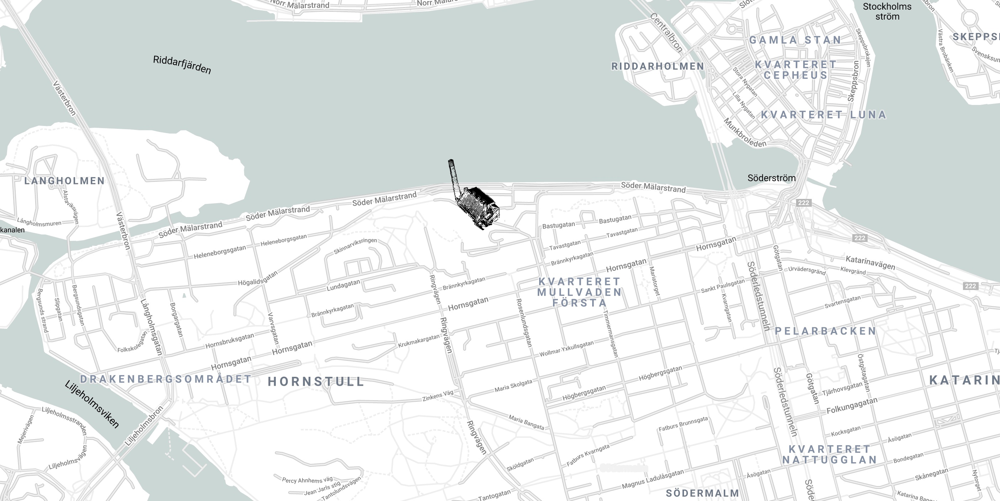

Välkommen till vår lilla ljudfabrik på Södermalm i Stockholm
Här görs poddar, radioreklam, inläsningar och ljud till TV.
Vi är Beppo:
Vår skorsten syns nästan över hela Stockholm, men följ kartan nedan när du närmar dig Münchenbryggeriet
